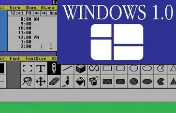

Overview
Windows 1.0: A milestone in graphical user interfaces (released 1985).
As computers evolved through the generations, a series of key technological and conceptual developments transformed them from room-sized machines used by specialists into the powerful, user-friendly systems we rely on today. These changes took place over several decades and shaped the foundations of modern computing.
💾 1. Advances in Memory and Storage
Early computers used punched cards and paper tape to store data and instructions. These were replaced over time by magnetic drums and then magnetic core memory, which allowed faster and more reliable data access.
In later decades, the introduction of semiconductor RAM and eventually solid-state drives (SSDs) led to massive improvements in speed, capacity, and durability. Modern computers can store and retrieve vast amounts of information almost instantly, making them far more versatile and efficient than earlier machines.
⚡ 2. Moore’s Law and Miniaturisation
In 1965, Gordon Moore, co-founder of Intel, observed that the number of transistors on a microchip roughly doubles every two years, while costs remain relatively stable. This observation, known as Moore’s Law, has guided the semiconductor industry for decades.
As components became smaller and more powerful, computers evolved from filling entire rooms to fitting on desks, laps, and eventually in pockets. Miniaturisation enabled the rise of personal computers, laptops, and mobile devices, making computing accessible to billions of people worldwide.
3. The Rise of Operating Systems
Early computers required programmers to manually input instructions using switches or punched cards, and they could run only one program at a time. As technology advanced, operating systems (OS) were developed to manage hardware resources, coordinate multiple programs, and simplify interaction with machines.
- Batch processing systems (1950s–60s) automated sequences of jobs.
- Time-sharing systems (1960s–70s) allowed multiple users to work on the same machine simultaneously.
- Graphical user interfaces (GUIs) (1980s–90s) made computers accessible to non-specialists, using windows, icons, and pointers instead of text commands.
Windows 1.0: One of the first graphical user interfaces for personal computers (released 1985).
Modern operating systems such as Windows, macOS, Linux, iOS, and Android provide the foundation for everything from personal computing to global data centres.
4. Software and User-Centred Design
In the earliest generations, programming was done in machine code or assembly language, which was difficult and time-consuming. The development of high-level programming languages like FORTRAN, COBOL, BASIC, and later C, Java, and Python made programming far more efficient and opened computing to a much wider audience.
The growth of application software, including word processors, spreadsheets, games, and creative tools, shifted the focus from hardware capabilities to what users could achieve with software. At the same time, user-centred design made computers easier and more intuitive to use, contributing to their widespread adoption in homes, schools, and workplaces.
5. From Specialist Tools to Everyday Technology
These advancements combined to transform computers from specialised, expensive, single-purpose machines into powerful, affordable, and interconnected tools that shape nearly every aspect of modern life.
Today’s systems integrate high-speed processors, massive memory, sophisticated software, and user-friendly interfaces, forming the foundation of modern computing as we know it.